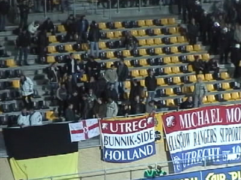

Roda JC - FC Utrecht 26 januari 2001
Roda JC - FC Utrecht 26 januari 2001

Een gedeelte van De Utrechtgasten zat op west waar het tot
schermutselingen kwam met Roda-supporters. De Domstedelingen
verstierden de minuut stilte voor Volendam en Dave Lennertz.

De meeste Utrechtsupporters stonden op oost.
Inpakken en wegwezen!
De trommelaars van west.
Van Haaren heeft geel gekregen. Vd Luer maant tot kalmte.
Anastasiou kopt pal voor rust de 2-0 in.
De zuidtribune explodeert van vreugde.
Is it a plane, is it a bird, is it a Fortuna '54-supporter???
In het harde duel werd Soetaers halfdood getrapt. Tot groot
ongenoegen ging het spel nog lang gewoon door na deze blessure.
De zeer irritante Vreven provoceert het publiek door met
de bal te gaan stuiteren en jongleren.

Een van de vele opgefokte momenten in dit bekerduel.
Roda wint met 2-0 en bedankt hier het publiek.
Lichte progressie.......
Een mooi gebaar van Daves vrienden.

............
Nog even aafsjtoume....!
3' Gábor Torma 1-0, 45' Yannis Anastasiou 2-0
©KPD